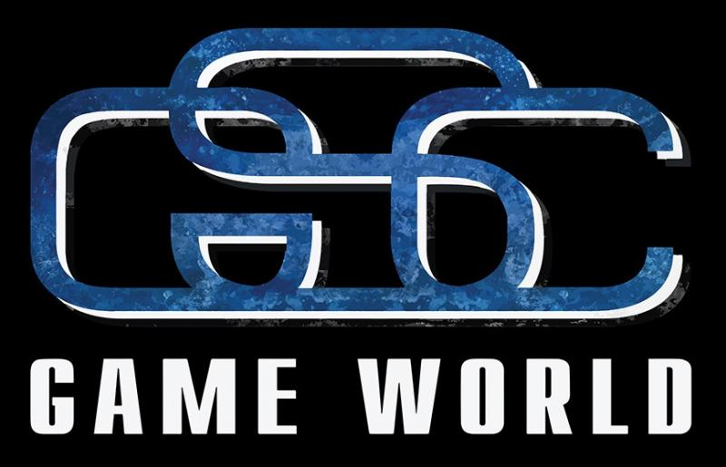
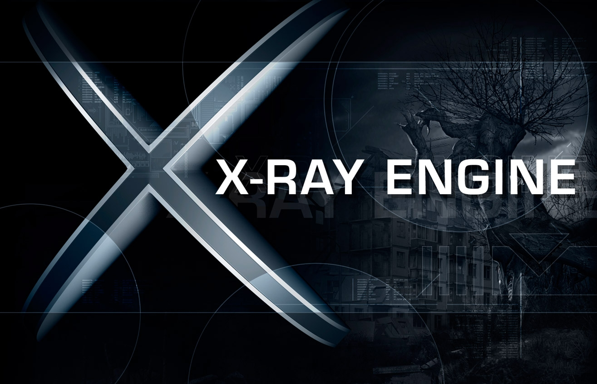

разработка движка X-ray.
История появления движка.
Движок полностью разработала украинская игровая студия GSC Game World, над графической частью движка в основном работали программисты Алесь Шишковцов и Александр Максимчук (они же работали в 4A Games над проектом Metro 2033). Первая демонстрация движка была проведена в 2001 году: Он работал на DirectX 7 (в дальнейшем к выходу Теней Чернобыля в 2007 году добавили поддержку DirectX 8 и 9), поддерживал Detail mapping, Lightmap продвинутый AI и текстуры высокого разрешения — в одном кадре могло находиться до 4 000 000 полигонов. Однако, чтобы всю эту красоту могли тянуть компьютеры того времени, пришлось сильно ограничить размер игровой локации — она могла быть не больше 2 кв. км и грузилась сразу и целиком, но между локациями были переходы с загрузочными экранами. X-Ray был написан на C/C++ с использованием исходников Microsoft DirectX SDK, с подключенным к нему компилятором языка LUA “lua.JIT.1.1.4”. При работе использовались библиотеки Microsoft Visual C++ 7.1, Creative EAX,ODE, OpenAL,GameSpy Client и Color Picker.

Развитие движка.
Как и любой «долгострой», за 6 лет с момента выхода движка до появления на нем первой игры он приобретал все больше новых «плюшек», таких как:
- Поддержка всех D3D акселераторов третьего поколения, от GeForce 2 и выше;
- Визуализация, оптимизированная под технологию TnL;
- Технология отложенного освещения и затенения, которая позволяет достичь высокой достоверности в рендеринге освещения при высокой геометрической сложности сцены;
- Продвинутая Level of Detail технология для всей геометрии;
- Высокодетализированные персонажи и оружие;
- Высокоскоростная смешанная система анимации, способная на неограниченное число интерполяции костей и модульных операций;
- Поддержка SSE/3Dnow! технологий для процессоров Intel и AMD соответственно, позволяющие оптимизировать нагрузку на них;
- Основанная на портальной системе, нелинейная система определения видимости;
- Технологии Dynamic occlusion/contribution culling;
- Адаптирующаяся под «железо» технология кешированния;
- Колорированное динамическое освещение и динамические «мягкие» тени;
- Разрушаемые анимированные источники света;
- Продвинутый выбор источника света, совмещение и его разделение, отбрасывание теней персонажами;
- Система частиц с реальной физикой;
- Продвинутая шейдерная система;
- Динамическая смена погоды, дня и ночи.
X-Ray Engine 1.0.
В единственной игре на этом движке, Тени Чернобыля, изначально на выбор в настройках было два API — DirectX 8 с особенностями, описанными выше, и DirectX 9, добавляющий еще несколько графических эффектов:
- Рендеринг в высоком динамическом диапазоне (HDR) с плавающей запятой;
- Bump mapping, Normal mapping и Parallax mapping;
- Полностью динамическое освещение, мягкие тени;
- Depth of field (глубина резкости), Motion Blur (размытие в движении), Bloom (размытие света на краях объекта) и динамические лучи света.
A-Life.
Еще одна особенность движка, которой могут гордиться разработчики — это система искусственного интеллекта A-Life. Сами разработчики описывают ее так:
Суть [A-Life] заключается в том, что персонажи в игре живут своей жизнью и существуют всё время, а не только когда их видит игрок. [...] Мы ввели два термина, характеризующие 2 модели поведения персонажа, отличающихся степенью детализации: офлайн и онлайн. Офлайновое поведение персонажа является очень простым с точки зрения детализации: персонаж не отыгрывает анимации, звуки, не управляет активно инвентарём, не строит детализированные сглаженные пути. Онлайновое поведение напротив имеет полную степень детализации. Т.е. можно считать, что офлайновое поведение является плодом онлайнового.
В нашей системе пока игрок играет на своём уровне, другие персонажи живут на других уровнях, т.е. находятся в офлайне, т.е. используют офлайновое поведение. Более того, ввиду большой населённости, не все персонажи в пределах одного уровня имеют онлайновое поведение, а лишь те, кто находится в заданном радиусе от игрока (это может зависеть от уровней, обычно в районе 150 метров) или же по желанию геймдизайнеров.
Для реализации этого симулятор следит за передвижением игрока и объектов в офлайне и переводит их в онлайн/офлайн. При вычислении перехода объектов используется стандартный трюк с инерцией: радиус перехода в офлайн больше радиуса перехода в онлайн.
Далее стоит сказать о навигации объектов в онлайне и офлайне. У нас в игре есть уровни, для каждого из которых создаётся свой навигационный граф, который используют персонажи для передвижения в онлайне. Мы называем его детальным графом. Для каждого детального графа также создаётся его менее детализированный аналог, вершины которого можно связать с вершинами такого же графа другого уровня/ей. Т.е. после объединения всех таких графов воедино мы получаем граф, который объединяет все уровни. Он и используется персонажами для передвижения в офлайне. Также им пользуются персонажи в онлайне, когда они выполняют свои стратегические цели. Например, если персонаж в онлайне решил идти на другой уровень, то он строит путь по глобальному графу, затем строит путь по детальному графу своего уровня со своей позиции до точки глобального графа. Если эта точка уже на другом уровне, то он телепортируется туда и автоматически переходит в офлайн. Для того, чтобы это не происходило на глазах у игрока, мы точки перехода для игровых персонажей ставили дальше точки перехода игрока, где-то «за углом».
ИИ сделан очень качественно, и на протяжении всей игры нет ощущения, что Зона мертва — постоянно происходят какие-то события: перестрелки, встреча различных сталкеров, мутантов, появление новых сообщений на КПК и т.д.
X-Ray Engine 1.5.
Через год послы выхода Теней Чернобыля, в 2008 году, вышла новая часть игры, Чистое Небо. В игру добавили новое оружие и локации, а так же поддержку нового API — DirectX 10. Это позволило существенно улучшить качество воды и частиц, а так же добавить поддержку намокающих поверхностей (то есть поверхность до и после дождя выглядит по-разному) и Steep Parallax Mapping. Но в общем и целом графика была на уровне предыдущей части игры.
X-Ray Engine 1.6.
В заключительной части трилогии, Зов Припяти, вышедшей в 2009 году, движок получил поддержку DirectX 11. Однако увы — все его особенности движок 8илетней давности не потянул, поэтому добавили только тесселяцию. Общий уровень графики остался тем же.
Физический движок.
В «X-Ray» используется свободный физический движок Open Dynamics Engine (ODE). Его особенности:
- Высокая скорость обработки столкновений (быстрее, чем в коммерческих движках MathEngine, Havok, и т.д.), обнаружение столкновений оптимизировано для большого числа запросов в высокополигональной среде;
- Реалистичная симуляция баллистики, движения, физики машин и т.д.
X-Ray Engine 2.
Игра S.T.A.L.K.E.R. 2 на движке X-Ray 2 была анонсирована в августе 2010 года, выход игры предполагался в 2012. Однако в декабре 2011 года разработка игры была остановлена, и до сих пор не продолжена, хотя игровая студия GSC, разрабатывающая игру, существует и сейчас — в сентябре 2016 года она выпустила игру Казаки 3. Известно, что на момент заморозки проекта движок был готов на 70-80%, а так же было сделано несколько игровых уровней и персонажей. В игре предполагался бесшовный мир, а физическим движком выступал Havok.